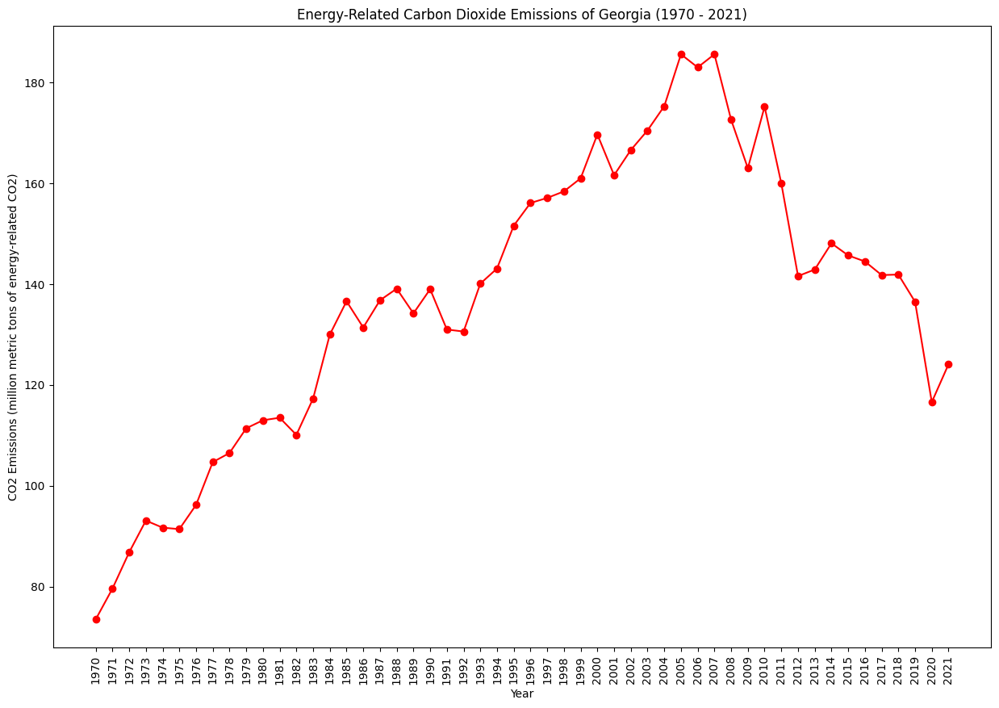
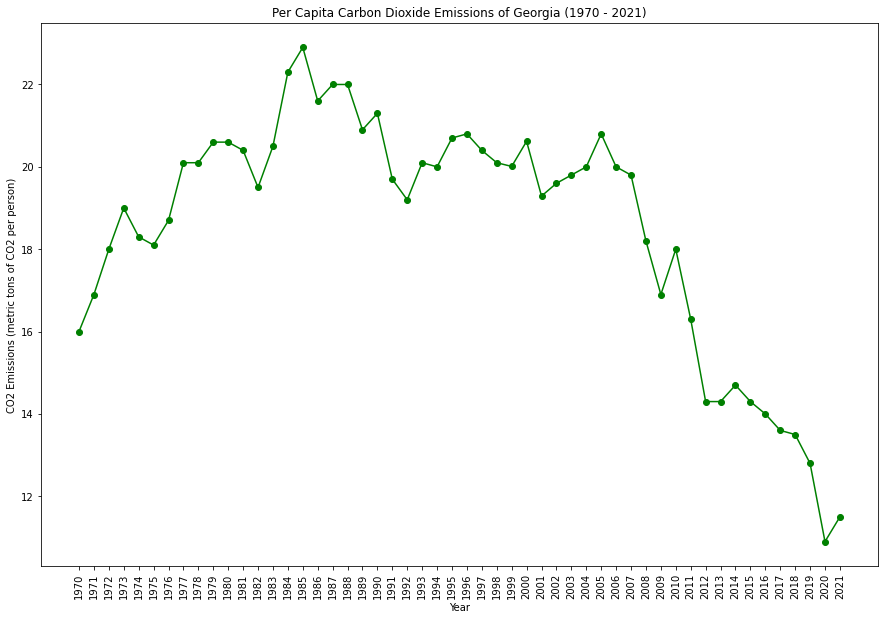
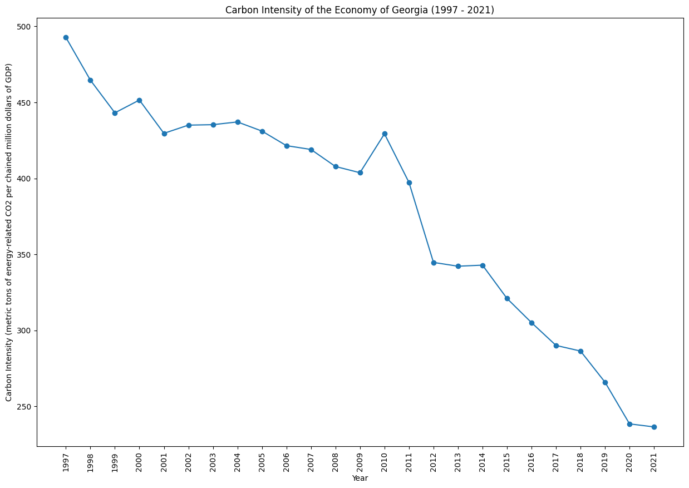
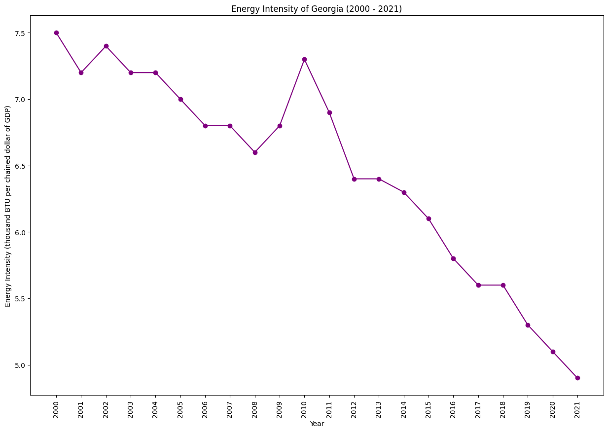

|  |  |
|  |  |
Georgia's energy mix has historically included a significant share of coal, but there's a growing emphasis on diversification. The state is making strides in renewable energy adoption, particularly with solar power. Challenges include balancing economic development with environmental conservation, especially in rapidly growing metropolitan areas.